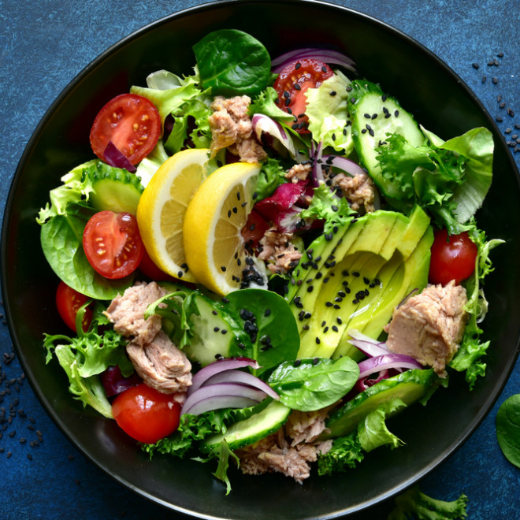

Les propriétés divines de la salade

Une grande richesse en fibre
indispensable pour assurer un bon transit, détoxifier l’organisme, bien nourrir le microbiote (et empêcher la
prolifération des bactéries pathogènes), ralentir la charge glycémique et amener rapidement à satiété.
Une mine de vitamines et de minéraux
notamment de la vitamine B9 (acide folique), indispensable au renouvellement cellulaire, à la protection
cardiovasculaire, aux troubles de l’humeur et de la mémoire; et de la vitamine C nécessaire aux défenses
immunitaires.
Côté minéraux, elle abrite surtout du calcium et du fer.
Un bel apport en antioxydants
notamment des caroténoïdes et plus précisément de la lutéine et de la zéaxanthine , essentielles à la santé
oculaire.
Mais aussi des composés phénoliques anti-cancers.